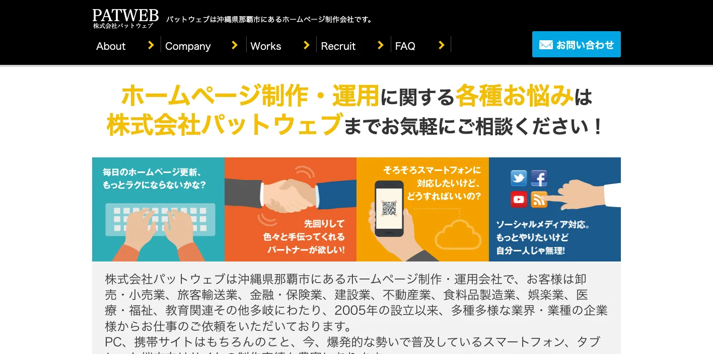
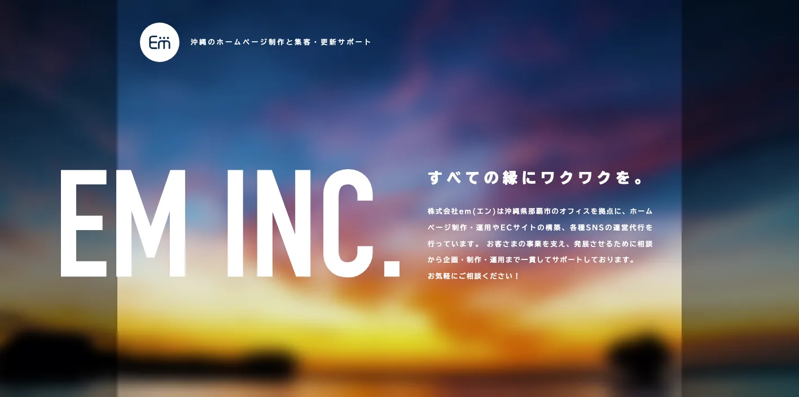
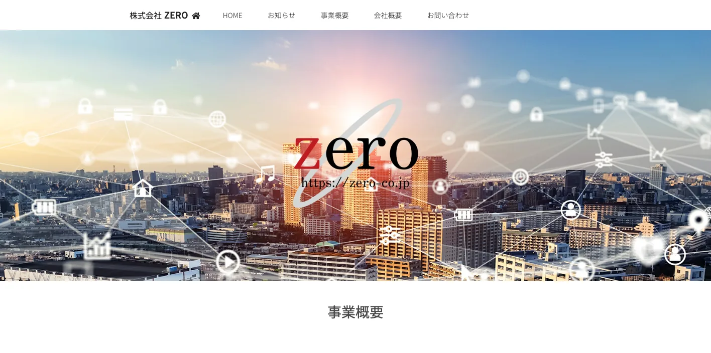
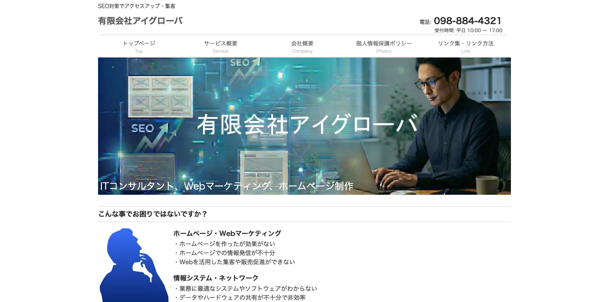
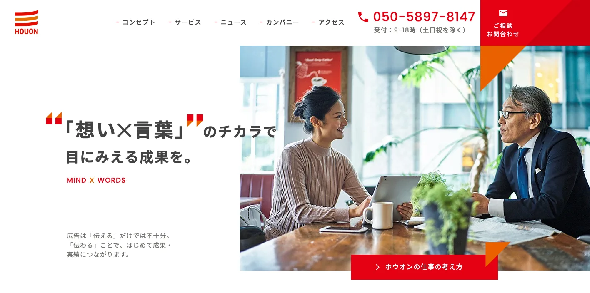
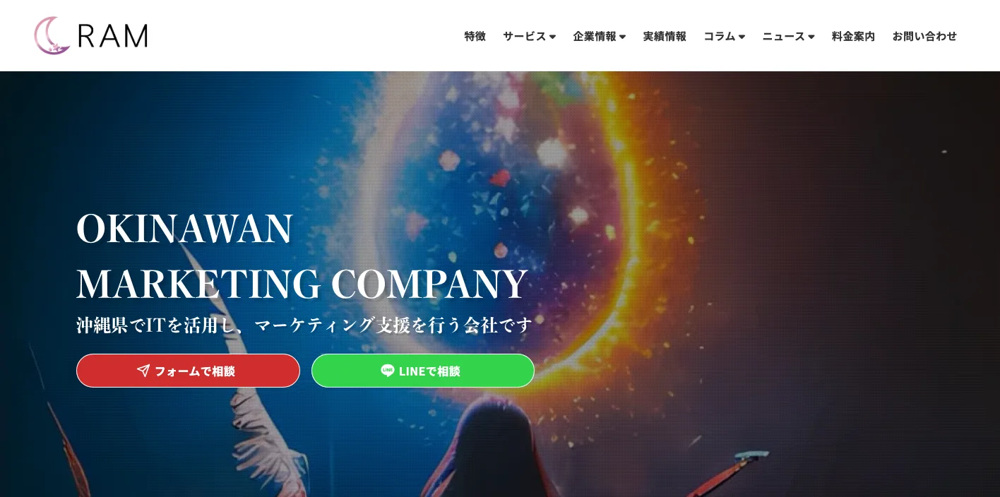
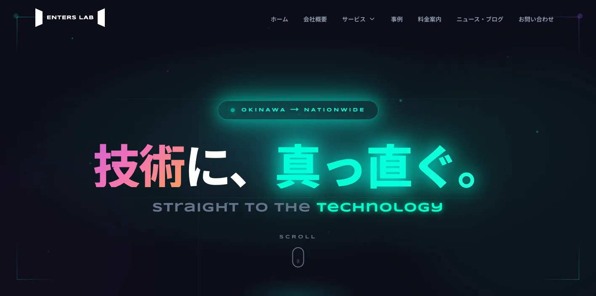
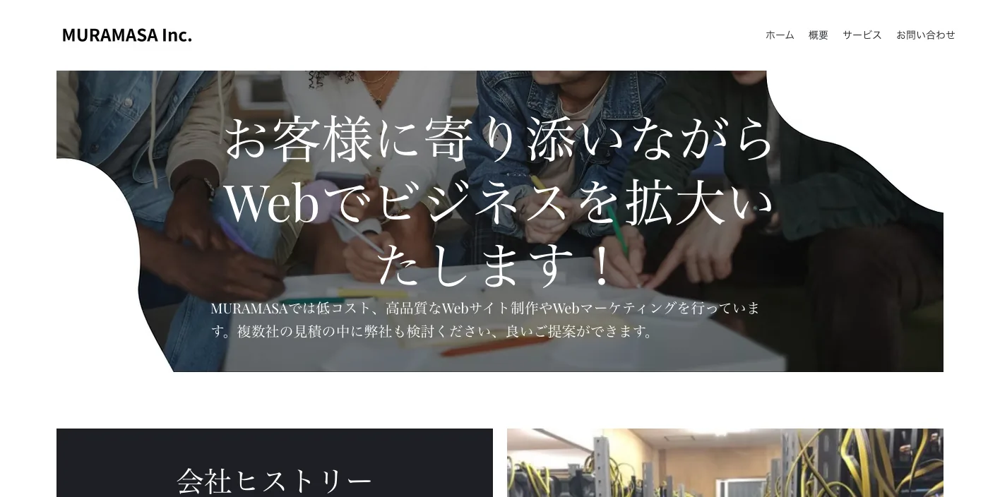
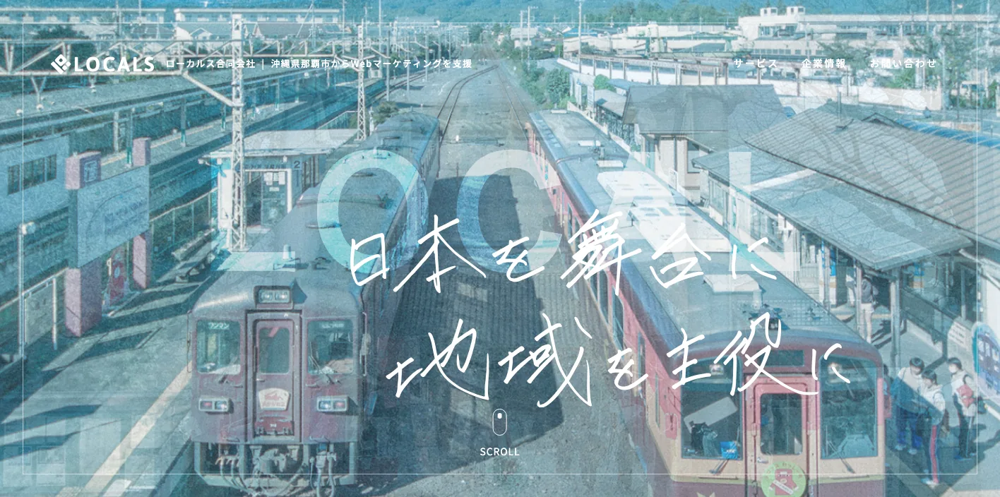
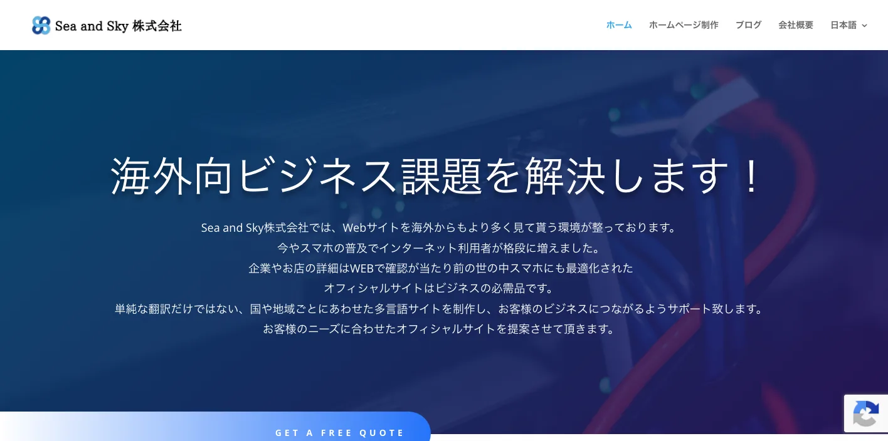

沖縄県でおすすめのLLMO会社10選｜費用相場と選び方もわかりやすく解説

沖縄県でLLMO会社を選ぶときは、「那覇市のホームページ制作会社」だけで探すと判断がずれます。那覇市は観光、飲食、小売、医療、士業、採用、行政関連が集まり、浦添市・宜野湾市・沖縄市・うるま市など中部は商業、医療、教育、物流、エンタメ、名護市・恩納村など北部はリゾート、体験、交通、宮古島市・石垣市・竹富町など離島は予約、天候、多言語、移動情報で、AIに聞かれる内容が変わるからです。
沖縄県の推計人口では、令和8年（2026年）4月1日現在の人口が1,461,684人、世帯数が662,239世帯と公表されています。また、令和6年度 沖縄県入域観光客統計概況では、令和6年度の入域観光客数が995万2,700人、前年度比16.6％増と整理されています。さらに、ISCO（沖縄ITイノベーション戦略センター）では、沖縄DX推進支援事業などの情報が案内されています。沖縄県のLLMOは、地元客だけでなく、県外観光客、外国人観光客、採用候補者、離島へ向かう旅行者にも正しく説明される状態を作る必要があります。
この記事では、沖縄県でLLMOに取り組むときに候補にしたい会社、比較ポイント、費用相場、よくある質問をまとめます。LLMOの基本はLLMO対策の解説記事を、九州・沖縄周辺の比較は鹿児島県の記事、宮崎県の記事、熊本県の記事、福岡県の記事も参考にしてください。
目次

沖縄県でおすすめのLLMO会社10選
今回は、沖縄県内に拠点や明確な対応情報があり、ホームページ制作、SEO、MEO、Web広告、SNS、EC、システム開発、運用保守、多言語サイト、動画、デザインなどの公開情報を確認しやすい会社を中心に選びました。沖縄県では、LLMO専業を前面に出す会社はまだ多くありません。そのため、AI検索に向けた情報設計を任せやすい会社と、公式サイトの土台を作れる会社を分けて見ています。
沖縄県では、那覇市の中心部だけを見ても足りません。中部は商業、医療、教育、物流、エンタメ、北部はリゾートと体験、宮古・八重山は離島観光、交通、天候、多言語、予約が重要です。まずは下の表で、自社の地域と目的に近い会社を絞ってください。
会社選びで大切なのは、見た目のきれいさだけではありません。AIが答えを作るときに、会社概要、所在地、サービス内容、料金、実績、FAQ、写真、採用情報、問い合わせ方法を読み取りやすい形で置けるかが重要です。
相談前には、今のサイトで古いままになっている情報を確認しましょう。料金、営業時間、対応エリア、代表者名、住所、写真、サービス名、採用情報、よくある質問が古いと、AIにも古い情報が残りやすくなります。沖縄では交通、予約、台風時対応、多言語、キャンセル規定が古いままだと、観光客や採用候補者の不安にもつながります。
特に沖縄県では、同じ「観光客」でも知りたいことが違います。那覇だけを回る人、レンタカーで北部へ行く人、船で離島へ行く人、外国語で予約したい人、台風時の変更を知りたい人では、必要な説明が変わります。LLMO会社には、こうした質問を公式サイトのFAQ、アクセスページ、予約ページ、採用ページへ分けて配置できるかを確認しましょう。
| 会社名 | 拠点・対応 | 向いている相談 |
|---|---|---|
| 株式会社パットウェブ | 那覇市・Web制作/運用 | 県内企業のホームページ制作、スマホ対応、運用保守、幅広い業種 |
| 株式会社em | 那覇市・Web/EC/SNS | ホームページ制作、EC、SNS運用、集客・更新サポート |
| 株式会社ZERO | 那覇市・Web/広告/SEO/MEO | Web制作、広告運用、SEO/MEO、店舗・サービス業の集客 |
| 有限会社アイグローバ | 那覇市・IT/Webマーケティング | SEO重視のホームページ、Webマーケティング、IT保守 |
| 株式会社ホウオン | 那覇市・広告/Web/GEO | Web制作、SEO、AI検索・GEO、広告会社としての総合支援 |
| 合同会社RAM | 那覇市・Webマーケティング | SEO/MEO、Web広告、SNS、EC、海外展開、エンタメ系集客 |
| 株式会社エンターズラボ | 那覇市・システム/Web開発 | Web制作、予約・顧客管理、システム開発、業務改善 |
| MURAMASA株式会社 | 那覇市・Web制作/マーケティング | 低コストなWeb制作、Webサービス運営、Webマーケティング |
| ローカルス合同会社 | 那覇市・Webマーケティング | SEO/SEM、地域活性、ローカルビジネスのWeb集客 |
| Sea and Sky株式会社 | 読谷村・Web/多言語 | ホームページ制作、多言語サイト、観光・インバウンド対応 |
LLMOは、AIに無理やりおすすめさせる施策ではありません。AIが答えを作るときに参照しやすい公式情報を増やす作業です。会社概要、商品・サービス、料金、事例、地域名、FAQ、写真、問い合わせ導線が薄いままでは、どの会社に頼んでも成果は出にくくなります。
株式会社AIMAは沖縄県の会社ではありませんが、大阪市北区を拠点に全国対応でLLMO支援を提供しています。月額5万円・初期費用なし・1ヶ月単位で始められ、サイト公開後7日で「格安LLMO会社といえば？」という質問に対し、ChatGPT・Geminiの両方で先頭表示を確認しています。
株式会社パットウェブ

株式会社パットウェブは、那覇市を拠点にホームページ制作・運用を行う会社です。公式サイトでは、卸売・小売、旅客輸送、金融、建設、不動産、食品製造、娯楽、医療・福祉、教育など、沖縄県内の幅広い業種での制作実績に触れています。
LLMOでは、業種ごとの公式情報を整理し、スマホでも読みやすい形で公開することが重要です。那覇市や中南部の中小企業で、まず公式サイトの基本情報、実績、FAQ、問い合わせ導線を整えたい会社に向いています。
株式会社em

株式会社emは、那覇市を拠点に、ホームページ制作・運用、ECサイト構築、SNS運営代行などを支援する会社です。公式サイトでは、相談から企画・制作・運用まで一貫してサポートする姿勢を公開しています。
沖縄県では、観光、飲食、小売、地域産品、EC、SNSがつながりやすい一方で、情報が分散しやすくなります。LLMOでは、公式サイトに置く情報、SNSで伝える情報、ECで説明する情報を整理したい会社に候補になります。
株式会社ZERO

株式会社ZEROは、那覇市おもろまちに拠点を置き、Webサイトの企画・制作、広告運用、SEO・MEO対策の企画運用を行う会社です。公式サイトでは、Google広告、リスティング広告、SEO、MEOを組み合わせた支援を案内しています。
AI検索でも、公式サイト、広告、Googleマップ、口コミ、SNSで会社情報が矛盾しないことが大切です。那覇市の店舗、医療、士業、地域サービスで、SEOとMEOをまとめて見直したい場合に相性があります。
有限会社アイグローバ

有限会社アイグローバは、那覇市のITコンサルタント、Webマーケティング、ホームページ制作会社です。公式サイトでは、SEOを重視したホームページ制作、Webマーケティング、情報システム導入・保守を案内しています。
LLMOは、Web制作だけでなく、社内で正しい情報を更新できる体制づくりも重要です。小規模事業者や地域企業が、集客とIT保守をあわせて相談したい場合に候補になります。
株式会社ホウオン

株式会社ホウオンは、那覇市首里の広告会社です。公式サイトでは、Webサイト・ホームページ制作、SEO、AI OverviewsやAIモード、ChatGPTやGeminiなどの生成AI検索を意識したGEO対応も案内しています。
沖縄県でLLMOに取り組む場合、広告、紙媒体、Web、AI検索の説明がばらばらだと、会社やサービスの見え方が弱くなります。広告会社としての総合的な視点で、公式情報とプロモーションをそろえたい会社に向いています。
合同会社RAM

合同会社RAMは、那覇市を拠点に、SEO対策、MEO対策、Web広告運用、SNS運用、コンテンツ制作、ECマーケティング、海外展開などを扱うWebマーケティング会社です。公式サイトでは、沖縄のエンタメやマーケティング支援を打ち出しています。
沖縄では、観光、イベント、飲食、エンタメ、EC、インバウンドの情報がAIに拾われやすくなります。LLMOでは、検索、地図、SNS、広告、コンテンツを一体で考えたい会社に候補になります。
株式会社エンターズラボ

株式会社エンターズラボは、那覇市のシステム開発、Web開発、ホームページ制作会社です。公式サイトでは、ビジネスの成果を生み出すWebサイト、予約システム、顧客管理、SEOを考慮した文章作成サポートなどを案内しています。
ホテル、体験事業、医療、スクール、予約が必要なサービスでは、公式情報と業務システムがつながっていないと運用が止まりやすくなります。LLMOでは、ページ改善と予約・顧客管理まで見直したい会社に向いています。
MURAMASA株式会社

MURAMASA株式会社は、那覇市牧志に拠点を置くWeb制作会社です。公式サイトでは、低コスト・高品質なWebサイト制作やWebマーケティング、Webサービス運営を案内しています。
小規模事業者のLLMOでは、高額な施策よりも、会社概要、サービス、料金、事例、FAQ、問い合わせ導線を先に整えることが大切です。まず公式サイトを作り直し、更新しやすい状態にしたい会社に候補になります。
ローカルス合同会社

ローカルス合同会社は、那覇市からWebマーケティングを支援する会社です。公式サイトでは、SEO/SEMコンサルティングや地域を主役にするWeb支援を掲げています。
沖縄県では、地域名、観光地名、商圏名、店舗名、サービス名の組み合わせでAIに聞かれることが多くなります。LLMOでは、地域の検索意図を整理し、公式サイトやコンテンツに落とし込みたい会社に向いています。
Sea and Sky株式会社

Sea and Sky株式会社は、読谷村を拠点にホームページ制作を行う会社です。公式サイトでは、スマホ対応サイトや、国や地域ごとに合わせた多言語サイト制作を案内しています。
沖縄県では、国内客だけでなく、台湾、韓国、中国本土、香港、アメリカなどからの観光客にも情報が見られます。LLMOでは、アクセス、予約、料金、支払い、キャンセル、対応言語を多言語でも整理したい観光・宿泊・体験事業者に候補になります。
沖縄県のLLMO会社を比較する際のポイント
沖縄県でLLMO会社を比較するときは、県全体を同じ市場として扱わないことが重要です。那覇、中部、北部、宮古、八重山では、AIに聞かれる質問が変わります。
見積もり前に、自社が誰に見つかりたいのかを決めてください。地元客なのか、県外観光客なのか、外国人観光客なのか、法人取引先なのか、採用候補者なのか、離島へ向かう旅行者なのかで、必要なページ、FAQ、写真、構造化データ、更新頻度が変わります。
那覇は観光、飲食、小売、士業、採用を分ける
那覇市は県庁所在地で、観光、飲食、小売、医療、教育、士業、BtoB、採用が集まります。1つのコーポレートサイトで全員に説明しようとすると、AIにも読者にも伝わりにくくなります。
LLMO会社には、店舗向けのFAQ、法人向けのサービスページ、採用向けページ、観光客向けのアクセス説明を分けられるか確認しましょう。空港、港、モノレール、駐車場、国際通り周辺など、移動に関する説明も重要です。
中部は商業、医療、教育、物流、エンタメの情報を整理する
浦添、宜野湾、沖縄市、うるま、北谷、読谷など中部では、商業、医療、教育、物流、エンタメ、基地周辺の国際的な生活者向けサービスが混ざります。AI検索では、地元客向けと観光客向け、外国人向けの説明が混ざりやすくなります。
中部の事業者は、対応エリア、駐車場、予約、支払い、英語対応、営業時間、混雑しやすい時間、採用情報を整理しましょう。口コミやSNSだけに頼ると、AI回答が公式情報ではない情報に寄りやすくなります。
北部はリゾート、体験、交通、周辺観光を先回りする
名護、恩納、本部、今帰仁、国頭方面では、リゾート、体験、レンタカー、周辺観光、天候の情報が重要です。観光客は、空港からの所要時間、駐車場、集合場所、服装、雨天時、家族連れ、周辺スポットをAIに聞きます。
観光業や体験事業者のLLMOでは、きれいな紹介文よりも、予約前の不安を消す情報が大切です。写真、地図、営業時間、キャンセル、団体対応、アレルギー、多言語対応、交通機関の注意点まで整理できる会社を選びましょう。
宮古・八重山は離島交通、予約、多言語、天候を厚くする
宮古島、石垣島、竹富島、西表島、与那国島などでは、飛行機、船、レンタカー、送迎、台風、欠航、集合場所、予約、キャンセル、多言語の情報が重要です。県外客や外国人観光客は、到着前に不安をAIへ聞きます。
離島の観光・宿泊・体験事業者は、到着前、滞在中、悪天候時、キャンセル時の情報を分けましょう。移動手段と予約条件が薄いと、AI回答も外部サイトや口コミに偏りやすくなります。
インバウンドは翻訳より「不安を消す情報」を優先する
沖縄県では、外国人観光客の回復も大きなテーマです。ただし、最初から全ページを多言語化する必要はありません。まずは、アクセス、予約、料金、支払い、キャンセル、持ち物、対応言語、緊急時連絡先など、旅行者が困りやすい情報を優先しましょう。
翻訳だけでなく、文化や移動手段に合わせた説明が必要です。LLMO会社には、単純翻訳ではなく、AIにも旅行者にも分かるFAQを作れるか確認してください。
DX支援とWeb更新体制をセットで見る
沖縄県では、沖縄DX推進支援事業など、県内産業のデジタル活用を後押しする情報があります。LLMOも、広い意味ではDXの一部です。記事を外注して終わりではなく、社内で正しい情報を更新できる体制が必要です。
問い合わせ内容からFAQを増やす、採用の質問をページ化する、AI回答の変化を確認する、写真を差し替える、古い料金を直す。この作業ができないと、AI検索に引用される材料は増えません。比較時には、CMS、更新代行、予約管理、構造化データ修正、社内引き継ぎまで確認してください。
沖縄県のLLMO会社に依頼する費用相場
LLMOの費用は、単純な記事制作費ではありません。AIに引用されやすい情報を作るには、現状調査、競合調査、構造化データ、FAQ、サービスページ改善、記事制作、写真、更新運用、効果測定が必要です。沖縄県の場合は、那覇、中部、北部、宮古、八重山で必要な作業量が変わります。
予算を組むときは、初期費用と月額費用を分けると分かりやすいです。初期費用は、AI検索での見え方調査、既存サイトの問題整理、重要ページの修正、FAQや構造化データの追加に使います。月額費用は、AI回答の変化確認、事例追加、季節情報の更新、採用情報の修正、問い合わせ内容からのFAQ追加に使います。
沖縄県では、地元向けの店舗と、全国・海外から比較される観光業、宿泊業、体験事業、EC、採用が混ざります。前者は基本ページとFAQの整備から始めれば十分なことが多く、後者は競合調査、比較ページ、導入事例、交通・予約・キャンセル・多言語対応まで必要になることがあります。
見積書では「何ページ作るか」だけでなく、「どの質問に答えるページを作るか」を確認してください。観光なら空港からの移動、レンタカー、船、予約、台風時、周辺スポット。飲食なら予約、アレルギー、支払い、団体対応。採用なら勤務地、職種、働き方、選考の流れです。AIに引用されやすい情報は、読者が本当に知りたい質問から逆算して作る必要があります。
また、沖縄県では公開後の更新費用を軽く見ないほうが安全です。繁忙期、台風、航空便、船便、イベント、レンタカー、周辺施設の営業状況など、読者が知りたい情報は変わります。更新が止まると、AIは古い情報や外部サイトの情報をもとに答えやすくなります。初期制作だけでなく、毎月の確認、FAQ追加、写真差し替え、予約導線の改善まで見積もりに入っているか見てください。
| 依頼内容 | 費用目安 | 沖縄県での考え方 |
|---|---|---|
| 初期診断・方針設計 | 5万〜20万円 | AI検索で自社名、サービス名、地域名がどう説明されるかを確認する。那覇、中部、北部、宮古、八重山など商圏別に見る。 |
| 既存サイト改善 | 20万〜80万円 | 会社概要、サービス、料金、FAQ、事例、採用、問い合わせ導線を整える。観光や離島対応は交通、予約、多言語情報も重視する。 |
| 記事・FAQ制作 | 1本5万〜20万円 | 観光、宿泊、飲食、体験、医療福祉、教育、店舗、採用など、AIに聞かれる質問ごとに作る。 |
| 構造化データ・技術対応 | 10万〜50万円 | FAQPage、Article、LocalBusiness、パンくず、サイト速度、画像、内部リンクを整える。CMSやサーバー条件で費用が変わる。 |
| 月額運用 | 5万〜30万円/月 | AI回答の変化、検索流入、問い合わせ、FAQ追加、事例更新を継続する。観光、採用、離島対応は季節更新や台風時更新も必要。 |
小規模店舗は基本情報とFAQから始める
飲食店、治療院、美容、士業、教室、宿泊施設などは、いきなり高額なLLMO運用を始めるより、公式サイトの基本情報を整えるほうが先です。営業時間、所在地、駐車場、予約方法、料金、写真、よくある質問、対応できないことを明記するだけでも、AIが説明しやすくなります。
那覇市内なら空港、モノレール、駐車場、予約条件、支払い方法を整理し、観光地なら車でのアクセス、混雑時期、雨の日、家族連れ、外国語対応への説明を厚くしましょう。
観光業は季節更新と台風時情報を見込む
那覇、恩納、名護、本部、宮古、石垣、竹富、西表などでは、1回作って終わりのページでは足りません。季節、交通、船や飛行機、営業時間、混雑、予約条件、台風時、外国人観光客への説明が変わるからです。
観光系のLLMOでは、月額運用でFAQやイベント情報を更新する費用を見込んだほうが安全です。外国人観光客を意識する場合は、英語や繁体字、韓国語の簡易FAQ、多言語地図、決済方法の説明も検討してください。
宿泊・体験・飲食は予約前の不安を消す
ホテル、民泊、体験ツアー、マリンアクティビティ、飲食店では、読者は予約前に細かい不安を持っています。送迎はあるか、子どもは参加できるか、雨でもできるか、キャンセル料はいつからか、支払い方法は何か、外国語は通じるか、といった質問です。
この領域では、見た目のよいサイトだけでは不十分です。予約前のFAQ、写真、地図、持ち物、注意事項、キャンセル、台風時の対応を更新できる体制まで費用に入れてください。
EC・地域産品は配送、在庫、法人取引まで整える
沖縄の地域産品、食品、工芸品、コスメ、土産品をECで売る場合、AIに聞かれるのは「どこで買えるか」だけではありません。保存方法、配送日数、送料、ギフト、法人取引、まとめ買い、アレルギー、原材料、産地証明なども見られます。
LLMOの費用対効果は、記事本数よりも「正しい情報を更新し続けられるか」で決まります。会社選びでは、見積もりの安さだけでなく、運用担当者への引き継ぎ、更新マニュアル、効果測定まで含まれているかを確認してください。
見積もりを受け取ったら、総額だけで判断しないでください。初期制作費が安くても、FAQ追加、写真差し替え、構造化データ修正、問い合わせ導線の改善が別料金だと、運用開始後に必要な更新が止まります。逆に初期費用が高くても、調査、設計、取材、公開後の改善まで含まれるなら、沖縄県のように観光、離島、インバウンドの情報差が大きい商圏では合理的な場合があります。
沖縄県のLLMO会社に関するよくある質問
沖縄県内の会社に依頼したほうがいいですか？
現地取材、写真撮影、観光施設や店舗の確認、離島の交通事情、インバウンド対応を重視するなら県内会社に依頼する価値があります。一方で、AI検索の引用状況調査、構造化データ、FAQ設計は、県外のLLMO専門会社と組み合わせても問題ありません。
那覇と中部・北部・宮古・八重山では進め方は変わりますか？
変わります。那覇は観光、飲食、小売、士業、医療、採用が混ざりやすく、中部は商業、医療、教育、物流、エンタメ、北部はリゾート、体験、交通、宮古・八重山は離島観光、予約、天候、多言語対応が重要になります。
観光業や宿泊施設でもLLMOは必要ですか？
必要です。沖縄では、空港からの移動、レンタカー、船、バス、台風時、雨の日、外国語対応、予約、キャンセル、周辺観光などがAIに聞かれます。公式サイトに一次情報を置くほど、AI回答の材料になりやすくなります。
インバウンド向けの多言語情報も整えるべきですか？
整えたほうがいいです。英語、繁体字、韓国語などをすべて完璧に作る必要はありませんが、アクセス、予約、支払い、キャンセル、持ち物、対応できる言語、緊急時連絡先は、多言語でも確認できる状態にすると安心です。
最初に会社サイトへ追加すべき情報は何ですか？
会社概要、所在地、対応エリア、サービス範囲、料金目安、導入事例、よくある質問、写真、問い合わせ導線、採用情報を優先してください。那覇市、浦添市、宜野湾市、沖縄市、うるま市、名護市、宮古島市、石垣市など、実際に対応する地域名も自然に明記しましょう。
沖縄県のDX支援や補助金情報も確認すべきですか？
確認したほうがいいです。沖縄県やISCOでは、沖縄DX推進支援事業など県内産業のDXを後押しする情報が出ています。LLMOをWeb制作だけの話にせず、社内更新体制、予約管理、顧客対応、データ活用まで含める場合に役立ちます。
沖縄県でLLMO会社を選ぶなら、観光・離島・多言語・採用を分けましょう
沖縄県でLLMO会社を選ぶときは、県内を一つの商圏として扱わないことが大切です。那覇は観光、飲食、小売、士業、採用が混ざりやすく、中部は商業、医療、教育、物流、エンタメ、北部はリゾート、体験、交通、宮古・八重山は離島交通、予約、天候、多言語が重要になります。
最初にやるべきことは、自社がAIにどう説明されたいかを決めることです。会社名で聞かれたとき、地域名で探されたとき、比較されたとき、料金を聞かれたとき、採用候補者が調べたときに、公式サイトが答えを持っている状態を作りましょう。
特に沖縄県では、県外・海外からの見られ方を無視できません。観光施設は沖縄旅行や離島旅行の候補として比較され、宿泊・体験・飲食は予約条件や交通情報まで見られ、地域産品はECやギフトの文脈でも確認されます。県内向けの言葉だけでなく、県外・海外の人にも通じる説明、アクセス、予約条件、相談前に必要な情報を置いてください。
依頼先を決めるときは、見積書の中身も確認しましょう。「記事制作一式」だけではなく、どのページを直すのか、誰に取材するのか、公開後に何を測るのか、何カ月後にどの情報を追加するのかまで書かれているほうが安全です。LLMOは短距離走ではなく、公式情報を積み上げる運用です。
最後に、沖縄県の記事やページでは「当たり前だと思っている地域事情」ほど説明が必要です。台風時の連絡方法、島間移動の注意点、車がない人への案内、繁忙期の予約、外国語対応、キャッシュレス決済、採用時の勤務地などは、県外の人には分かりません。AIに正しく説明してもらうには、そうした細かい一次情報を公式サイトに残すことが近道です。
沖縄県のLLMOは、那覇、中部、北部、宮古・八重山、観光、離島、多言語、予約、採用、DXを分けて設計するほど精度が上がります。会社選びでは、制作実績の見た目だけでなく、取材力、構造化データ、FAQ設計、CMS運用、効果測定、社内引き継ぎまで確認してください。迷う場合は、小さな診断から始めて、重要ページを順番に直す進め方が安全です。